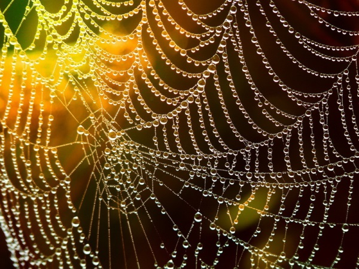

 Паутина – секрет паутинных желёз, который вскоре после выделения застывает в форме нитей. По химической природе представляет собой белок, близкий по составу к шелку. Ее плетут в основном паукообразные и применяют для охоты.
Наверх